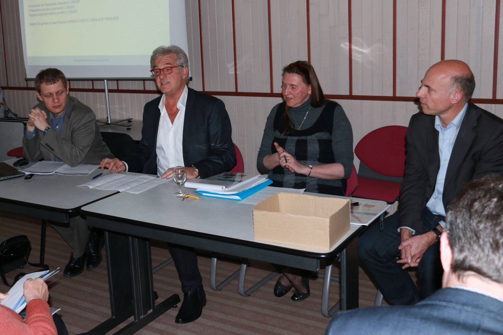
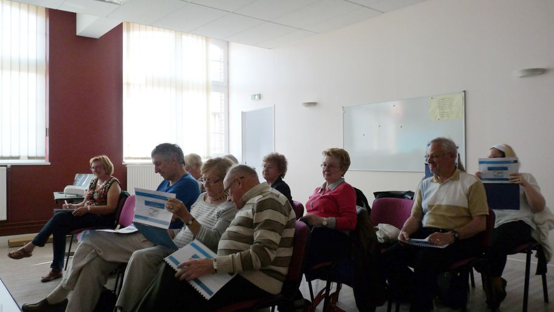
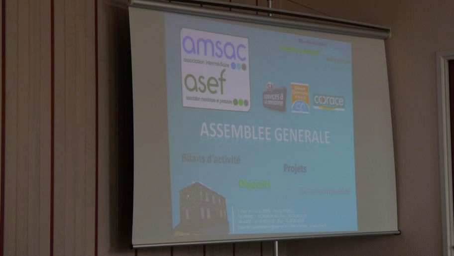
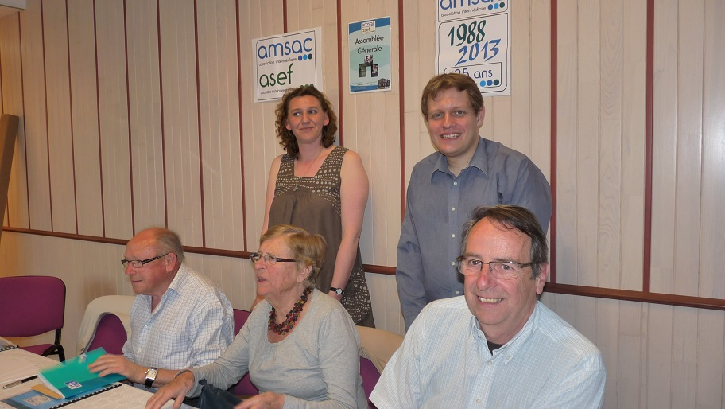
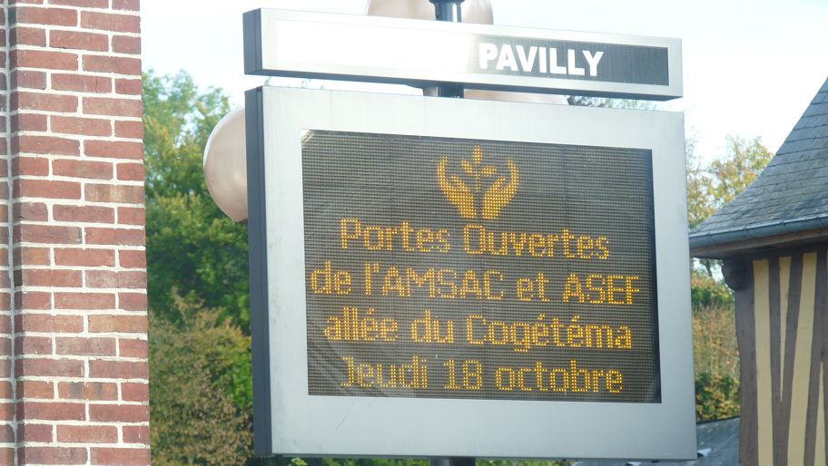
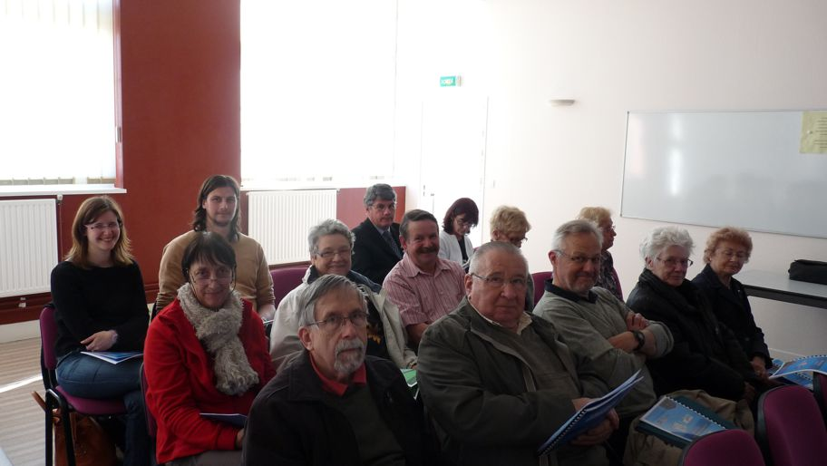

2017
Mercredi 26 Avril 2017
Assemblée Générale AMSAC-ASEF
Ce mercredi 26 avril, les bénévoles des associations AMSAC et ASEF se sont réunis pour dresser le bilan 2016 des deux structures en présence de Monsieur Christophe BOUILLON, député, Madame Chantal VERHALLE, Maire de Bouville, Monsieur François TIERCE, Maire de Pavilly et Monsieur Julien ALLEAU, Représentant du COORACE Normandie.

En savoir plus ...2016
Mercredi 26 Avril 2016
Assemblée Générale AMSAC-ASEF
Ce mercredi 20 avril, les membres des associations AMSAC et ASEF se sont réunies pour faire un bilan de l'activité 2015 des deux structures..

2015
Jeudi 23 avril 2015
Assemblée Générale AMSAC-ASEF
Résume de l'Assemblée Générale de nos deux structures qui s'est déroulée le 23 avril 2015.

En savoir plus ...2014
Jeudi 10 avril 2014
Assemblée Générale AMSAC-ASEF
L'Assemblée Générale de nos deux structures s'est réunie ce 10 avril 2014 à la Salle du CCAS de Pavilly..

En savoir plus ...2013
Jeudi 25 avril 2013
Assemblée Générale AMSAC-ASEF
Ce jeudi 25 avril s'est déroulée dans la salle du CCAS de la Mairie de Pavilly l'assemblée Générale de nos deux structures.

En savoir plus ...2012
Jeudi 18 octobre 2012
Portes ouvertes "20 ans de L'ASEF"
Ces "Portes Ouvertes" ont été l'occasion de présenter à nos clients, demandeurs
d'emplois, partenaires et aux maires de notre territoire d'intervention les activités et
les évolutions connues par nos structures.
Un verre de l'amitié a cloturé cette journée.
Un grand merci à tous les participants.

En savoir plus ...Jeudi 12 avril 2012
Assemblée Générale AMSAC-ASEF
L'Assemblée Générale de nos deux structures s'est déroulée le jeudi 12 avril 2012 dans la salle du CCAS de la Mairie de Pavilly..

En savoir plus ...